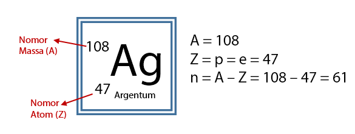

Atom merupakan bagian terkecil dari suatu materi. meskipun ukurannya yang sangat kecil, Atom adalah partikel paling kecil yang masih mempunyai sifat unsur.
Menurut para ahli fisika, jari-jari suatu atom sekitar 3–15 nm (1 nm = 10-9 meter).sampai saat ini belum ditemukan alat yang dapat menggambarkan bentuk atom secara jelas untuk dapat diamati.
meskipun belum dapat diketahui bentuknya secara jelas, para ahli dapat membuat perkiraan gambaran mengenai atom berdasarkan eksperimen dan kajian teoritis yang telah dilakukannya.
gambaran atom menurut ahli disebut juga dengan istilah model atom. hal inilah yang mendasari terjadinya perubahan-perubahan tentang model atom berdasarkan perkembangan ilmu pengetahuan.
Atom-atom dari unsur yang berbeda akan memiliki nomor atom dan nomor massa yang berbeda pula. hal ini disebabkan karena nomor atom dilihat dari jumlah proton yang terdapat pada atom sedangkan nomor massa dilihat dari jumlah proton dan neutron yang terdapat pada atom tersebut.
Istilah atom bermula dari zaman Leukipos danDemokritus yang mengatakan bahwa benda yang paling kecil adalah atom. Atom yang berasal dari bahasa Yunani yaitu atomos, a artinya tidak dan tomos artinya dibagi. Model atom mengalami perkembangan seiring dengan perkembangan ilmu pengetahuan dan berdasarkan fakta-fakta eksperimen. adapun beberapa nama yang turut andil dalam penemuan perkembangan model atom antara lain:
Copyright © 2022 Tensai Rooom